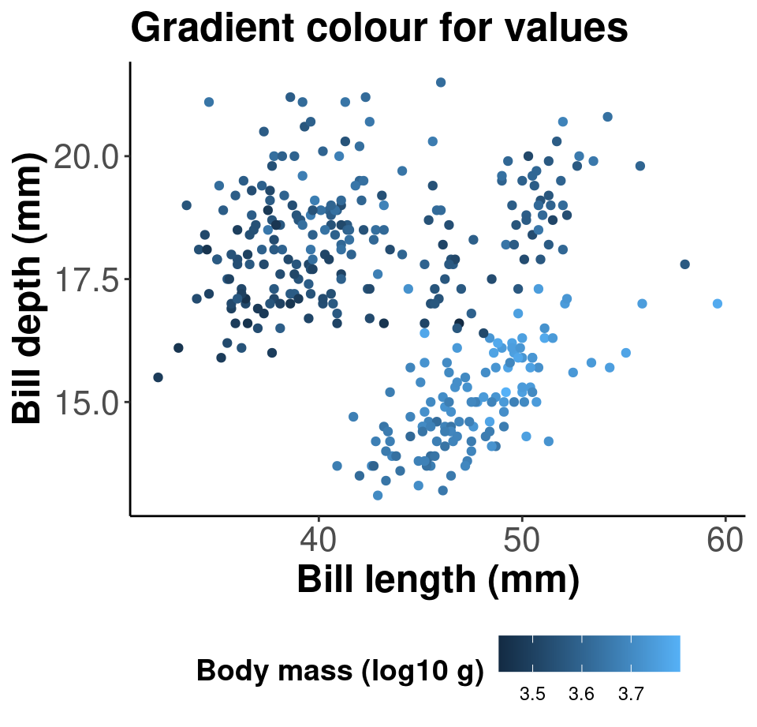
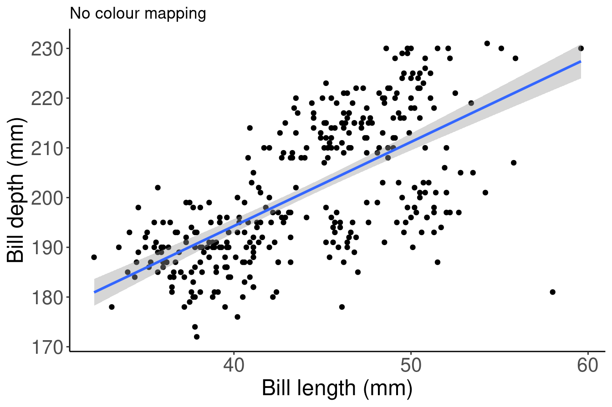
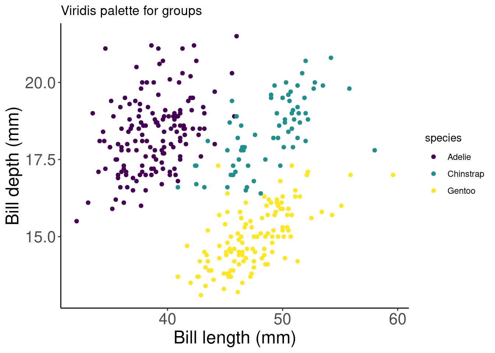
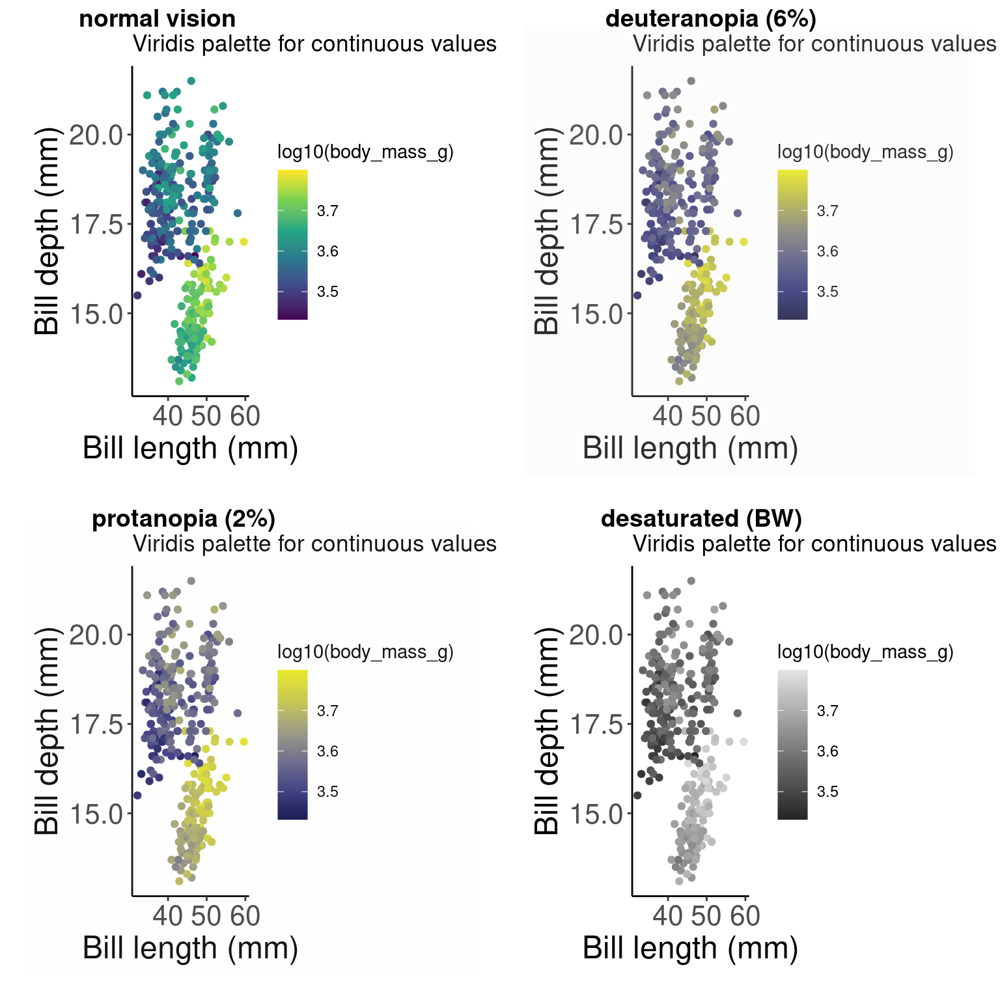

Chapter 8 Colours: make your points talk
When we are designed plots, we may want to change the colour of our data points in order to communicate different parts of the data. We may want to:
- Differentiate between groups
- Represent data values
- Highlight specific elements of the data

Reference: Fundamentals of Data Visualization (Wilke 2019).
8.1 Using aes() use to change colour
We can use the aesthetic layer aes() to map colours to our data in our plots. This will allow us to clearly communicate specific messages about our data. For instance, if we want to know whether bill length and flipper length vary differently across species, which of these plots allows us to answer that question?
# No colour mapping
ggplot(data = penguins, aes(x = bill_length_mm, y = flipper_length_mm)) +
geom_point() + geom_smooth(method = lm) + labs(title = "No colour mapping",
x = "Bill length (mm)", y = "Bill depth (mm)")
# With colour mapping
ggplot(data = penguins,
aes(x = bill_length_mm,
y = flipper_length_mm,
col = species)) + # Using the col argument, we can colour by species
geom_point() +
geom_smooth(method=lm) +
labs(title = "With colour mapping",
x = "Bill length (mm)",
y = "Bill depth (mm)")8.2 Manual colour change
In the above example, we used the col argument within aes() in order to colour our data points by species automatically. This is possible because aes() can call our data variables. However, this method will use a default colour palette. If we want to add specific colours to our plots, we can do it manually using scale_colour_manual() or scale_fill_manual().
# Default
# Let ggplot assign colours to species
pp <- ggplot(data = penguins) + geom_point(aes(x = bill_length_mm,
y = bill_depth_mm, colour = species)) + labs(title = "Default",
x = "Bill length (mm)", y = "Bill depth (mm)")
pp
# Manual colour change
# By using scale_colour_manual(),
# we can specify the exact colours we want to use
pp +
scale_colour_manual(
# Note that the colour order will correspond to
# the order of the species given in the legend
values = c("grey55", "orange", "skyblue"))Here, we are saving our plot as an object (pp), and adding elements to this object with a + to change the scaling of the colour mapping. We do not need to rewrite the whole ggplot to customize it!
8.3 Gradients
We can do the same thing with colour gradients using scale_colour_gradient() if we want to communicate something different about our data. In this example, we are colouring our data points by body mass using a gradient.
# Default
# Using the colour argument within aes() will use a default
# colour palette to make our gradient
pp2 <- ggplot(data = penguins) + geom_point(aes(x = bill_length_mm,
y = bill_depth_mm, colour = log10(body_mass_g))) + labs(title = "Default",
x = "Bill length (mm)", y = "Bill depth (mm)")
pp2# Manual
# By using scale_colour_graduent, we can set our colour
# gradient manually
pp2 + scale_colour_gradient(low = "blue", high = "red") + labs(title = "Manual")
# Note: there is also scale_colour_gradient2() to create a
# gradient with a midpoint value for diverging palettes8.4 Use a new colour palette
If you prefer to use a pre-set colour palette rather than setting your colours manually, but you do not want to use the default palette - don’t worry! There are a lot of options for you.
There are many R colour packages specifically designed to provide you with a range of colour palette options that all strike a different mood! For example, the RColorBrewer package have 35 palettes to choose from!
Here you can see they are organized into different groups depending on whether the colours are sequential, diverging or a mixture of the two. You can imagine that different palettes are better for different data types.
require(RColorBrewer)
display.brewer.all()
Want to see these palettes in action? Here is an example of the Dark2 palette being used to group data points with the scale_colour_brewer() function and the palette arguemnt.
# Palette for groups
pp + scale_colour_brewer(palette = "Dark2") + labs(title = "Palette for groups")There are other functions within the RColorBrewer package as well. By using scale_color_viridis(), we can use a default package that will translate from colour to gray scale without losing information. (Note that this is also an important consideration for colourblindness, which we will discuss soon).
# Palette for continuous values
pp2 + scale_color_viridis_c() + labs(title = "Palette for continuous values")Now what if we want to use just gray-scale palette for publication purposes? We can use the scale_colour_grey() function to colour our grouped data points.
# Palette for groups
pp + scale_colour_grey() + labs(title = "Palette for groups")Or we can use the scale_colour_gradient() function for continuous data, and set our low and high gradient points to black and light gray.
# Palette for continuous values
pp2 + scale_colour_gradient(low = "grey85", high = "black") +
labs(title = "Palette for continuous values")
8.5 Colourblind-friendly palettes
Have you ever considered how your figure might appear under various forms of colourblindness? We can use the package colorBlindness to consider this.
# Let's install the colorBlindness package
install.packages("colorBlindness")
library(colorBlindness)Let’s start by testing out some colours using the cvdPlot() function. This will show us how our current plot looks for different forms of colourblindness.
cvdPlot(pp) # Let's check how our plot looks with different forms of colour blindnessAs you can see, our current colour palette is not accessible! By using viridis palettes, we can guarantee our plots always communicate the same information no matter who the audience is.
8.5.1 Example for grouped data
Here is an example with grouped data points:
# Let's use a viridis palette to make our plot more
# accessible
pp_viridis <- pp + scale_colour_viridis_d() + labs(title = "Viridis palette for groups")
pp_viridis
# Did we succeed? Let'd use cvdPlot() to check again
cvdPlot(pp_viridis)# We succeeded!8.5.2 Example for continuous data
Note that we are using slightly different functions for different colours (ex. scale_colour_viridis_c(), scale_colour_viridis_d())
pp2_viridis <- pp2 + scale_colour_viridis_c() + labs(title = "Viridis palette for continuous values")
pp2_viridiscvdPlot(pp2_viridis)